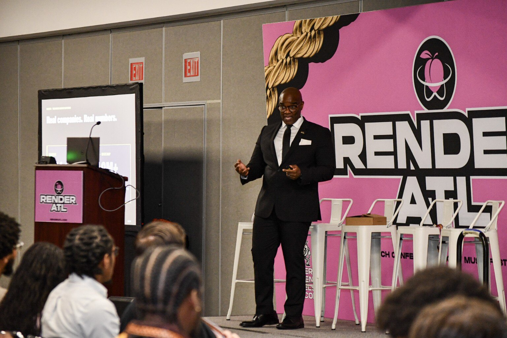
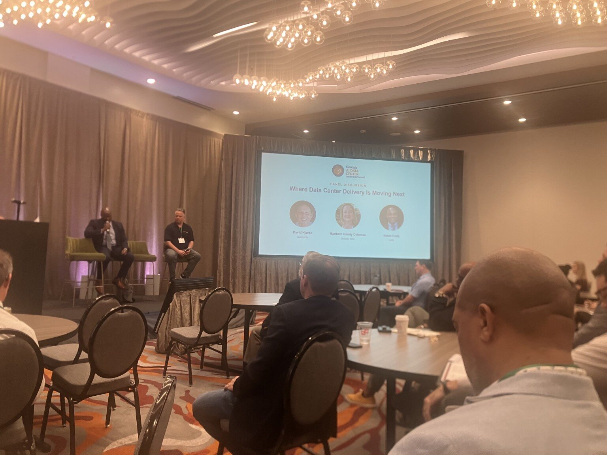
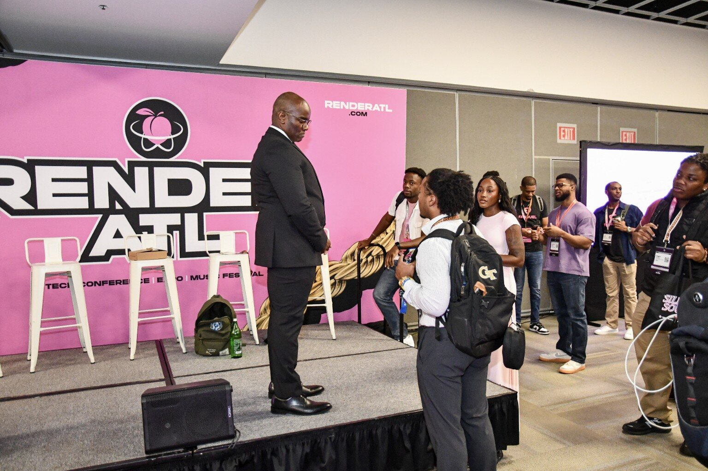
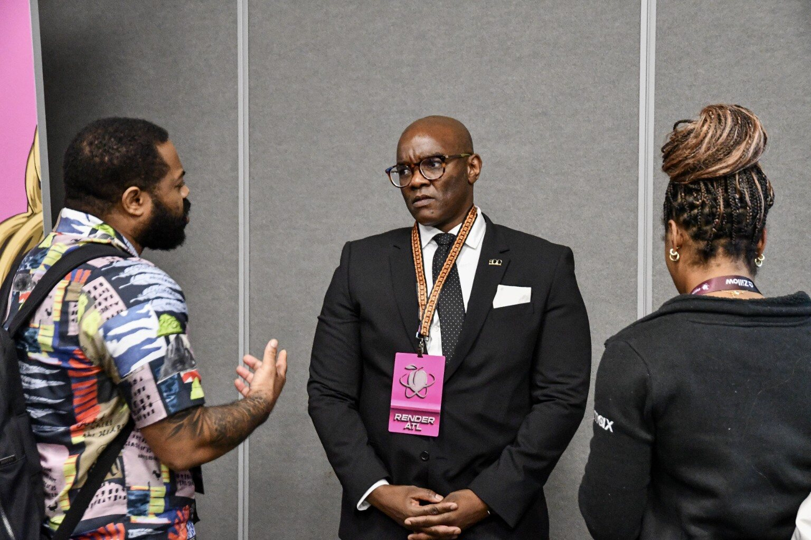
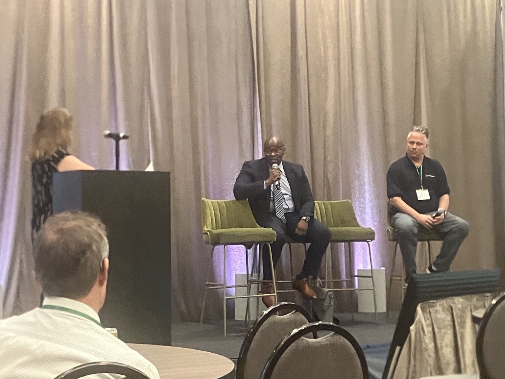

Keynote speaker, founder, educator, infrastructure strategist
Nolan builds the operators behind the AI infrastructure economy.
Nolan S. Code is the founder and executive director of the Atlanta AI & Robotics Initiative, a former Microsoft AI and cloud specialist, and an Army-trained operator. He speaks on AI infrastructure, robotics, data centers, edge systems, quantum literacy, and workforce development.
Now booking keynotes, workshops, executive briefings, and technical engagements for fall 2026 and 2027.
Founder, Atlanta AI & Robotics Initiative
Georgia Tech MBA
Morehouse College alumnus
RenderATL 2026 Keynote Speaker
Georgia AI Data Center Leadership Summit Panelist
40+ Students Trained
$100K+ Raised
First Graduate Secured a $115K Infrastructure Role
Former Microsoft AI & Cloud Specialist
U.S. Army Veteran
GTBAO Entrepreneur of the Year
Work with Microsoft, NVIDIA, Red Hat, Cisco, QTS, Google Cloud, Morehouse, University of Michigan
Atlanta Tech Week 2026
One keynote. One panel. Two conferences. A bigger platform.
Nolan carried one message across Atlanta Tech Week: AI leadership requires more than models. It requires physical infrastructure, trained operators, community ownership, and a real path from education to employment.

RenderATL 2026
From Demo to Production: The Infrastructure Gap
A keynote on the operating layer behind AI: compute, data centers, edge infrastructure, ownership of the stack, and the people required to move systems from demos into production.
Book this keynote
Georgia AI Data Center Leadership Summit
Where Data Center Delivery Is Moving Next
Nolan joined leaders from QTS, DataBank, and Georgia Tech to address site readiness, power, infrastructure constraints, community impact, and why talent must be treated as core data center infrastructure.
Book Nolan for a panel


About Nolan
Built for rooms that need more than inspiration.
Nolan speaks from the operating layer. His work is not about generic AI optimism. It is about what it actually takes to build systems, talent pipelines, and technical institutions that can carry AI into the real world.
Short Bio
Nolan S. Code is the founder and executive director of the Atlanta AI & Robotics Initiative, a year-round nonprofit building AI infrastructure, robotics, cybersecurity, quantum, and data center talent pipelines through Morehouse College and the Atlanta University Center. A former Microsoft AI and cloud specialist, U.S. Army veteran, and Georgia Tech MBA, Nolan has helped train more than 40 students, raised more than $100,000 for the mission, and built a model that helped its first graduate secure a $115,000 infrastructure role.
Longer Bio
Nolan’s work sits at the intersection of AI infrastructure, robotics, cloud systems, quantum literacy, and workforce development. Through AARI, he is building a practical talent pipeline that trains students to become operators, not observers. His work includes two live data center training environments, cloud and cybersecurity certification pathways, edge AI demonstrations, robotics education, quantum computing labs, and partnerships with major technology companies and academic institutions. He recently delivered a RenderATL keynote and joined the Georgia AI Data Center Leadership Summit. His core message is simple: talent is infrastructure.
40+
Students trained across AI infrastructure, cloud, cybersecurity, robotics, and quantum.
$100K+
Raised to build hands-on programs, training environments, and paid student opportunities.
$115K
Infrastructure role secured by AARI's first graduate.
2
Operational data center training environments supporting hands-on learning.
Speaking Topics
Topics built for technical leaders, institutions, educators, and workforce builders.
From Demo to Production: The Infrastructure Gap
Why AI adoption fails when organizations confuse prototypes with production systems, and what it takes to own the operating stack.
Physical AI Is the Next Wave
Robotics, edge inference, sensors, simulation, and real-world intelligence beyond chatbots.
The AI Infrastructure Workforce Gap
What students need to learn: Linux, cloud, GPUs, networking, data centers, edge deployment, and debugging.
Quantum Literacy for the Next Generation
Why quantum computing, quantum-safe security, and hybrid systems belong in workforce education now.
Operators, Not Observers
How AARI is building a hands-on HBCU talent pipeline across AI, robotics, infrastructure, and quantum.
Edge AI and Technical Sovereignty
Why local inference, private AI systems, Jetson devices, and campus data centers matter for ownership.
Energy to App
The full stack of AI: energy, chips, infrastructure, models, deployment, and applications.
Workshops & Technical Sessions
Hands-on sessions built for real understanding, not passive attendance.
AI Infrastructure Bootcamp
Students learn the full stack behind AI: Linux, cloud, GPUs, networking, containers, and deployment.
Edge AI Deployment Lab
A hands-on session using robotics or sensor data, model optimization, and edge inference concepts.
Quantum Literacy Workshop
A beginner-friendly session covering quantum concepts, circuits, Q#, CUDA-Q, and quantum-safe thinking.
Robotics + AI Workforce Lab
A practical workshop connecting robotics, simulation, physical AI, sensors, and student-built systems.
Executive AI Infrastructure Briefing
A private strategy session for leaders who need to understand what AI adoption actually requires.
Advisory
Strategic Advisory
For institutions that need to stop reacting to AI and start operating it.
Most organizations do not have an AI problem. They have an AI infrastructure, workforce, and operating-model problem. Advisory engagements give leadership teams a clear read on where they are, what to build, and who to train, backed by named deliverables and a defined timeline.
Executive Briefing
A focused half-day or full-day session with the leadership team. Deliverable: a written readiness assessment specific to the organization's context, talent base, and stated goals. For boards, cabinets, and executive teams that need a shared operating picture before committing to a strategy.
Value floor: $30,000.
Readiness Sprint
A six to eight week engagement co-authored with an executive sponsor. Deliverable: a strategy document covering skills taxonomy, lab and infrastructure build-out, partner architecture, curriculum-to-jobs map, and an eighteen-month roadmap. Weekly working sessions. Named outputs.
Value floor: $100,000.
Annual Advisory
A standing advisory relationship for institutions making multi-year commitments to AI infrastructure and workforce development. Quarterly on-site, monthly strategic calls, board-level support, and named affiliation. Limited to four clients per year.
Value floor: $300,000.
Advisory engagements are value-based and scoped around executive priority, institutional complexity, deliverables, travel, preparation, and strategic impact. Booking details are in the contact section.
Partner
Partner with AARI
Access the operator pipeline before your competitors do.
The Atlanta AI & Robotics Initiative is building the AI infrastructure workforce the industry says it cannot find, students trained on the full stack from energy and silicon through edge deployment and quantum readiness, anchored at Morehouse College and the Atlanta University Center. Partnership is not sponsorship. It is early access to a pipeline of operators that will be recruited heavily within twenty-four months.
Workshop Sponsor
Underwrite a hands-on technical workshop for the AARI cohort. Brand presence, recruiter access at the session, and post-event talent report.
Partnership investment: $10,000
Capstone Sponsor
Sponsor a semester-long capstone challenge built around a real problem from the partner organization. Student teams deliver working systems. First-look hiring rights on participating scholars.
Partnership investment: $25,000
Semester Partner
Embedded partnership across a full academic semester: curriculum input, recurring engineer-in-residence sessions, capstone access, and named pipeline visibility.
Partnership investment: $50,000
Founding Industry Partner
Multi-year strategic partnership with curriculum co-design, dedicated student operator teams, equipment and lab sponsorship rights, demo day anchor placement, and first-look recruiting across the full cohort. Limited slots.
Partnership investment: $100,000+
Strategic Anchor and Workforce Partner tiers ($250K+) are available for organizations building long-term hiring and infrastructure validation relationships. Inquire directly.
Value-Based Fees
Executive expertise, scoped for impact.
Speaker fees are value-based and reflect the strategic impact of the engagement, not time on stage. Pricing varies by audience, scope, preparation, travel, deliverables, recording rights, and whether the engagement includes a keynote, workshop, advisory session, or executive strategy component.
| Engagement | Value-Based Fee |
|---|---|
| Virtual keynote | From $5,000 |
| Virtual workshop | From $10,000 |
| In-person keynote | $15,000-$20,000 |
| Strategic workshop | $20,000-$30,000 |
| Executive workshop / strategy session | $40,000+ |
| Panel appearance | $3,000-$7,000 |
| Executive scoping session | $5,000 |
| Custom curriculum, lab, or demo build | Scoped separately |
| Recording, redistribution, or reuse | Additional licensing required |
Pricing reflects executive AI strategy, infrastructure and robotics expertise, workforce development experience, enterprise sales credibility, AARI platform-building experience, and the impact of the room.
Mission-aligned schools, nonprofits, HBCUs, and student-serving organizations are scoped intentionally based on fit, funding capacity, preparation, travel, deliverables, and strategic value. No engagement is priced by time alone.
Before Booking
Scope the room before we scope the work.
To scope the engagement properly, please include the following:
- Event date
- Event location
- Virtual, in-person, or hybrid
- Expected audience size
- Audience type
- Desired format
- Strategic outcome expected from the session
- Whether the session will be recorded, streamed, distributed, or reused
- Available budget range
- Travel coverage
- Point of contact for contract and payment
Speaker Rider
Clear expectations protect the work.
Payment
- Payment due within 30 days of event
- 50% deposit required for custom workshops, curriculum, or technical demo builds
- Travel billed separately unless included in a flat package
- Recording, redistribution, or reuse requires written approval and additional licensing
Travel
- Round-trip airfare from Atlanta, GA
- Ground transportation to and from airport, hotel, and venue
- Hotel accommodation, Marriott, Hilton, or Hyatt preferred
- Meals or per diem during event travel
Technical Requirements for In-Person
- Wireless lavalier or headset mic
- HDMI-compatible projector or large display
- Clicker or tech assistant
- Reliable Wi-Fi
- Table space for demos if technical session is included
Technical Requirements for Virtual
- Zoom, Teams, or similar platform
- Host privileges for screen sharing
- Tech check at least 48 hours in advance
- Recording not permitted without prior written approval
Press Kit
Assets for event teams, media, and partners.
Download Speaker One-Sheet
Open printable kit
Download Media Kit
Open media summary
Download Speaker Rider
Open rider details
Download Speaking Fees
Open fee sheet
Download RenderATL Speaker Graphic
2026 appearance asset
Download Current Speaker Photo
Selected RenderATL portrait
Download Keynote Photo
RenderATL 2026 stage image
{kind=link}
{kind=link}
{kind=link}
Media, Awards & Recognition
Signals that this work lands in real rooms.
Book Nolan
Speaking, workshops, executive briefings, media requests, and partnerships.
For speaking, workshops, executive briefings, media requests, or partnership inquiries, please include the event date, audience size, desired format, recording plans, available budget range, and the strategic outcome the engagement should support.
Use the contact form below.
Location: Atlanta, Georgia
Focus: AI infrastructure, robotics, edge AI, quantum literacy, workforce development